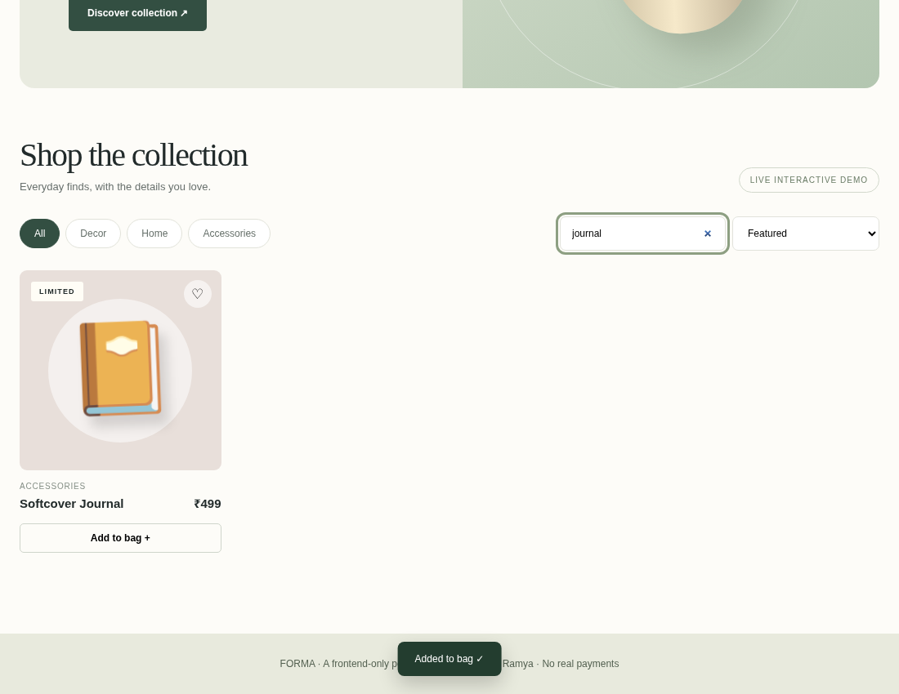
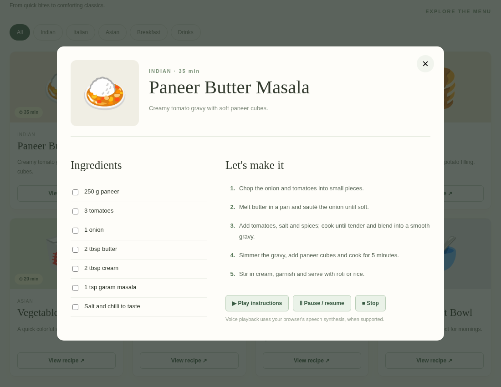
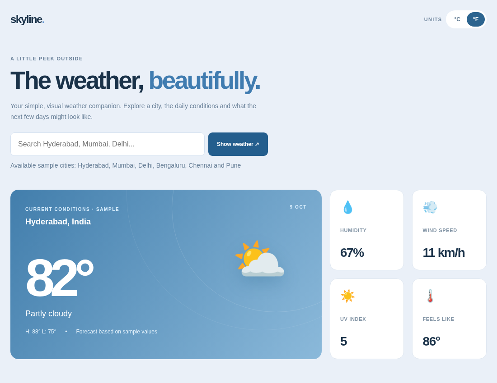

01 — THE FOUNDATION
Frontend development
Semantic, accessible and responsive experiences that work across screen sizes.
HTML5CSS3JavaScriptReact.jsNext.jsTypeScript
Frontend Developer / Creative Problem Solver
I turn ideas into clean, responsive and interactive web experiences, with a focus on thoughtful design and the little details that make a difference.
Hey! I'm Ramya, an Information Technology graduate who enjoys building websites and applications that look great and feel effortless to use.
My focus is modern frontend development — transforming requirements into responsive screens, polished components, clear workflows and smooth user interactions. I've worked on interfaces for a real estate application and an employee desktop workspace, alongside independent website projects.
I'm curious, detail-oriented, and always learning. I love the balance of design thinking and practical code.
I use the right mix of structure, styling and interactivity to make web ideas come to life.
Semantic, accessible and responsive experiences that work across screen sizes.
Interfaces with visual hierarchy, smooth interactions, purposeful motion and usability in mind.
Comfortable building, testing and improving features in day-to-day development workflows.
Projects and hands-on work, from application interfaces to interactive websites.
Property discovery, location-based agents, listings and role-specific experiences.
Employee workspace with dashboards, leave tracking, project and task views.

Interactive product catalog, search, filters, favorites and shopping cart.

Search recipes, follow ingredients and steps, and hear voice instructions.

Responsive weather dashboard with city selection and temperature switching.
Academic exploration of NLP and machine learning for review authenticity.
Website demos are frontend-only sample experiences. Application imagery is illustrative; no private company source code or data is included.
My journey combines practical development projects, teaching experience and a foundation in information technology.
View my resumeHands-on development experience
Worked on UI flows and responsive experiences for real estate and enterprise desktop applications, alongside interactive personal websites.
Sri Chaitanya School · 1 year
Developed communication, planning and problem-solving skills through classroom teaching and student support.
Tirumala Engineering College · CGPA 7.4
Built foundations in programming and completed projects in weather forecasting and fake online review detection.
I'd love to hear about frontend roles, interesting ideas or opportunities to collaborate.
attuluri03@gmail.com